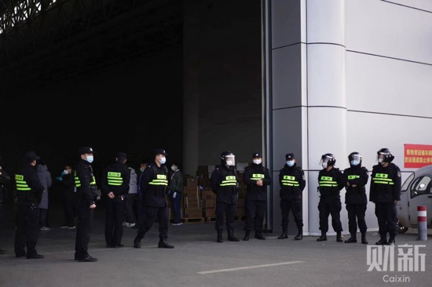

现场 | 湖北与武汉红会，物资捐赠卡在了这里？
原文链接 备份链接 海内外源源不断捐赠武汉，各大医院仍全面告急。被指定接收捐赠物资的主要机构湖北省与武汉市红十字会系统成为众矢之的，他们原本应该为重大突发事件做好准备，却一开始就因专业能力不足遭遇了信任危机。 本刊记者探访了武汉红十字会位 …
【财新网】（记者 萧辉）一边是抗疫一线医院的医护人员急缺口罩、防护服，一边是红十字会仓库堆积大量社会捐献的医疗物资，近日武汉市红十字会因为发放捐赠物资速度缓慢、程序繁杂引发武汉多家医院医护人员和公众的不满。今天（2月1日）从早上九点至下午五点，财新记者一直在武汉国际博览中心的红会临时仓库现场采访。记者看到，国博中心两个超过足球场大小的仓库里堆满物资，少许工作人员在仓库内清点、登记。从早上九点起，仓库外有多家医疗单位等候领取物资，直到下午才领到少量离开。与此同时，从省外驶来的救援捐赠物资车辆一直源源不断地驶入红十字会仓库。
“等了三个多小时，只领到一箱口罩，急需的防护服一件也没有。”一家定点医院领取物资的人员告诉财新记者，单位医疗物资告急，医用口罩、医用防护服仅够支撑一天了，医院领导把物资短缺状况上报给武汉市卫健委，市卫健委通知派人来红十字会仓库领取。她早上九点不到就来排队。“红会工作人员一直告知我们，在开会研究，请等候，一等就是三个小时，我们一线医务人员等不起啊。”最终她领了一箱五百个口罩，最紧缺的医用防护服一件都没有，“他们说医用防护服缺货”。

在仓库外长时间等候领取物资的人。图/财新记者 丁刚
湖北省中医院两名领取物资的工作人员也在等了数小时后才领到600个口罩。“我们的一次性防护头套每天消耗320个，现库存为0；一次性脚套每天消耗320，现在库存为0；医用防护服每天消耗300件，现有库存40件；防护面罩每天消耗100个，现有库存100个；手套每天消耗320双，也是1天之后断供。”他们表示，很多医院情况和湖北省中医院差不多，“大家在各自想办法”。
另一家发热病患定点医院的医生昨天刚上完夜班，上午稍做休息，中午就赶来红十字会仓库领物资：“同事在上班，我们下了班的人就到处去找物资，大家轮流着来，就是想确保一线的医生不‘裸奔’。太难了。”
作为接收确诊病患最多的武汉市金银潭医院更是物资短缺，下午金银潭医院来领取物资的工作人员告诉财新记者，医院急缺医用防护服，虽然接收了一些定向捐赠物资，但是达不到医学临床标准，不能给一线医生使用。
位于汉阳区的武汉龙阳医院，是一家二级非营利性民办综合医院。其工作人员上午就来赶来领取物资，直接被红会工作人员回绝，“不要听信谣言，区医院的救援物资不在我们这里领”。该医院工作人员告诉财新记者，他们医院有近200名隔离病人，但因为是基层医院，去各处领取物资处处碰壁。昨天他听说湖北省慈善总会有一批物资在机场，急匆匆赶到机场，被告知要经过检疫才能分发，叫他回去等通知。今天赶来红会仓库领取物资，再次空手而归。
蔡甸区卫健委的一名工作人员也是等了好久，才领到一箱口罩，他说这箱口罩分发给区内的各家基层医院，但远远不够。
财新记者了解到，各医疗机构从红十字会领取捐赠医疗物资分为两种方式，一种是定向捐赠，定向捐赠人会在物品包装盒上注明是定向捐赠，医疗机构与红十字会对接后可直接领取；另一种方式是由卫健委根据各医院的实际需求分配捐赠物资，列入物资分配名单的医疗机构可以来红会领取。
今天红十字会仓库外有数名公安和保安维持秩序，只有挂牌的工作人员才能进入。财新记者在现场看到，央视记者在红十字会仓库门口做红会物资分发直播报道，被保安驱逐停止直播。前来领取物资的医院工作人员也要经过繁琐手续才能进去。长航医院一名领取物资的工作人员因为没有带介绍信，在门口被堵了半个小时，电话反复交涉，才得以进去领取物资。

红十字会仓库外有数名公安和保安维持秩序，只有挂牌的工作人员才能进入。前来领取物资的医院工作人员也要经过繁琐手续才能进去。图/财新记者 丁刚
武汉邮政物流的数名工作人员告诉财新记者，他们从早上八点多，就在仓库外等着运送物资给武汉的各家医疗单位，但红会工作人员一直让他们等着，接近下午一点才把货物装箱。“我们也很心急，希望医护人员尽早能有防护服，早上八点多就来，一直干等着。”
与此同时，财新记者看到，从外省运来的救援物资，络绎不绝进入武汉国际博览中心的红十字会临时仓库。
记者在红十字会仓库现场和武汉红十字会总部要求采访物资分发情况，均被拒绝。一位红会工作人员私下告诉财新记者：“捐赠的物资种类很多，我们也是没日没夜工作，但人手远远不够。捐赠的物资需要分拣登记入库，才能发下去。尤其是医疗物资，很多都不符合医用标准”。他再次强调，医疗物资的分配情况要听卫健委的，“我们只管发放环节”。
此文限时免费阅读。感谢热心读者订阅财新通，支持新闻人一线探求真相！成为财新通会员，畅读财新网！
更多报道详见：【专题】新冠肺炎防疫全纪录（实时更新中）
原文链接 备份链接 海内外源源不断捐赠武汉，各大医院仍全面告急。被指定接收捐赠物资的主要机构湖北省与武汉市红十字会系统成为众矢之的，他们原本应该为重大突发事件做好准备，却一开始就因专业能力不足遭遇了信任危机。 本刊记者探访了武汉红十字会位 …
原文链接 备份链接 01.02.2020本文字数：3601，阅读时长大约6分钟 导读：关于一线医院防护物资紧缺的消息满天飞，湖北省红十字会、武汉红十字会物资分配效率和公平性问题引发质疑。 作者 | 第一财经 李澄晚 1月31日下午，涂先 …
原文链接 备份链接 *************▲************* （武汉红十字会官网截图/图） 全文共*3412*字，阅读大约需要7分钟。 “在物资发放这块，不会说我们想给谁就给谁，所有的分配由卫健委和防控指挥部来决定。” …
原文链接 备份链接 武汉市已将所有捐赠物资集中统一调配，这有助于物尽其用，但配送效率亟须提升。这几日陆续有社会捐赠物资送到武汉协和医院，但仅有一线医护人员能穿上防护服，很多医用物资仍然紧缺 文 |《财经》 …
原文链接 备份链接 今天，湖北省武汉市红十字会向武汉市中心医院提供了医用外科口罩4000个、医用防护服600套；向武汉市洪山区中医医院提供了医用防护服400套，84消毒液10箱，医用口罩5箱。武汉红十字会表示，接收的所有物资都将被送往一线 …